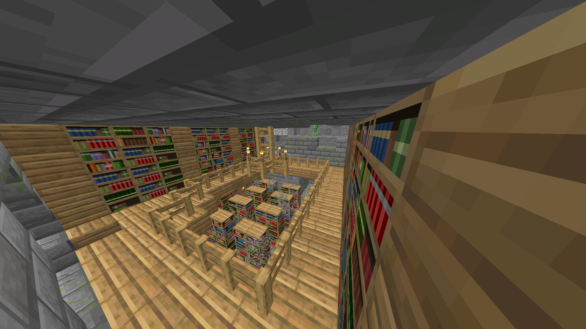
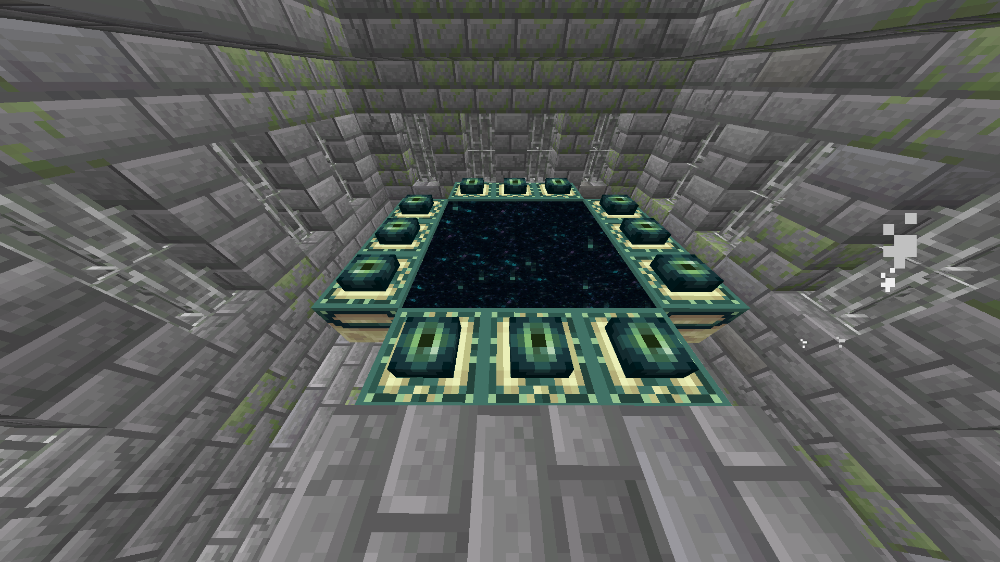
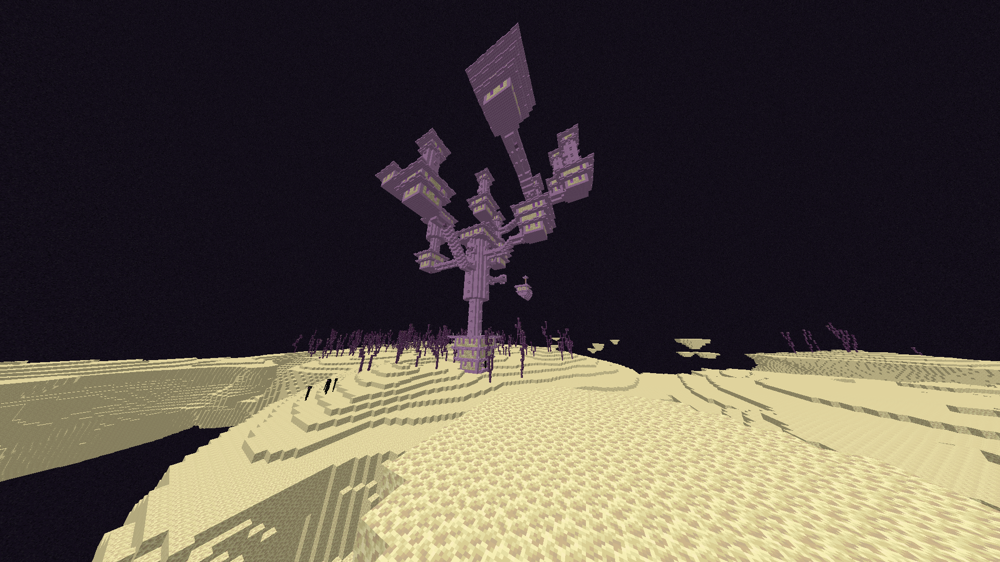
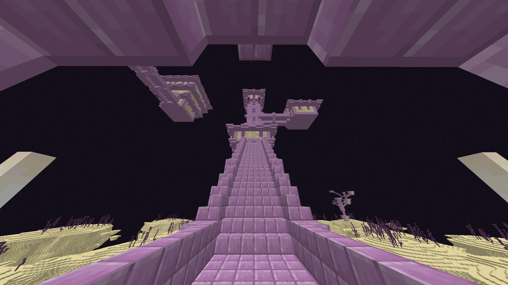
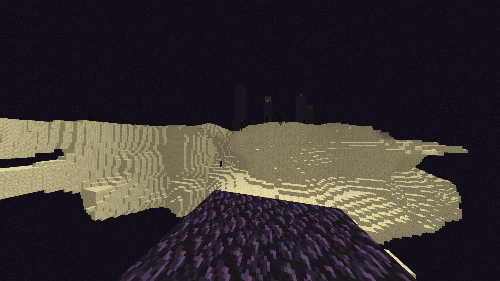
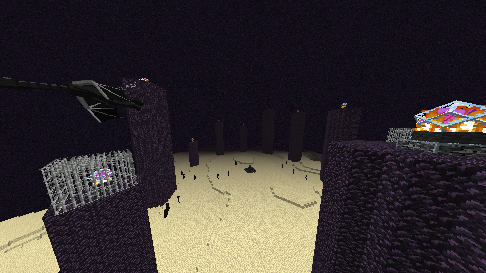

welcome to the end
Getting to The End
To gain access to the End, a player must first locate a rare End Portal, which leads to this realm. Due to the large scale of a Minecraft world, End Portals are nearly impossible to stumble upon by chance, as they are located in randomly-generated strongholds deep underground (unless a player found it with a specific seed). To find an End Portal, a player needs to acquire and use one or more Eye of Ender. This is a craftable item, created by combining blaze powder and an Ender Pearl. The End Portal can be located by throwing an Eye of Ender into the air (by right-clicking while holding the item), which will send it flying through the air and other blocks until it eventually falls. A player will need to throw multiple Eyes of Ender and pick them up. Multiple Eyes are needed because there is a 1/5 chance the Eye of Ender will break and vanish. It will likely take multiple throws to become close to a stronghold, indicated when an Eye of Ender hovers in one place after being thrown. Use each throw to get the general direction in which to go, and travel a fair distance before throwing it again. Once a player finds the End Portal within the stronghold, a player must repair it with several more Eyes of Ender. Activating the End Portal requires 12 Eyes of Ender, however, there is a possibility of finding some Eyes of Ender inside of chests in the stronghold. It's best to be prepared with a surplus of Eyes of Ender before journeying forth. The 12 Eyes of Ender must be placed in the End Portal Frames surrounding the End Portal. Once all 12 are in place, the End Portal will become active. Upon contact with any of the portal blocks, a player will be teleported to the End.
Geography
The End consists of several large islands surrounding the main island. Many more small islands can be scattered out further from the larger islands, some of which have End Cities. Chorus Plants and special blocks like purpur and End Rods can also be found on these islands. All of the islands are made of end stone and float above an endless black Void. Blocks that can be found on the main island include obsidian which makes up the healing pillars of the Ender Dragon, bedrock blocks found atop the tower and special blocks known as Ender Crystals which float above the pillars and heal the Ender Dragon.
Inner End
As soon as a player enters the End, a long, horizontal purple bar will appear on the top of the screen. This indicates the health of the Ender Dragon flying above (unless a player has already killed it previously). A player will spawn in a random location, sometimes in a small room underground, surrounded by end stone. The only ways to leave the End are to either kill the Ender Dragon and then take the Exit Portal, or to die. In Creative Mode, it is also possible to build an End Portal in the End and travel back to the Overworld using it.
There are tall pillars of obsidian that surround the center of the main island and form a circular shape. These pillars have Ender Crystals on top of them that will regenerate the Ender Dragon's health when it is nearby. These Crystals can be destroyed by hitting them once. Some are protected by iron bars which can make the Crystal more difficult to target. However, because they explode upon being destroyed, it is advised to use a bow with the infinity enchantment. They can also be safely destroyed by a thrown egg or snowball.
After defeating the Ender Dragon, an Exit Portal will open in the center bedrock structure, along with a single Dragon Egg atop it. Stepping through the Exit Portal will trigger the End Credits, giving a player the "The End" achievement before returning the player to the Overworld at the place of the player's last spawn point. Before defeating the Ender Dragon, it is impossible to return to the Overworld without dying. That being said, it is most advisable to create a few Ender Chests in which items can be stored, and then accessed from any dimension to avoid losing any important items while destroying the Ender Crystals.
